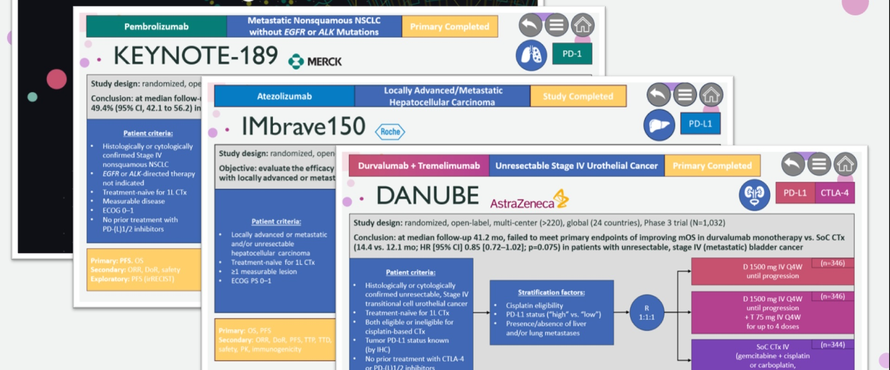

Clinical trial design summaries made upon request for AstraZeneca's global medical affairs oncology portfolio.
Postgraduate Researcher
Stellenbosch University
Feb 2014 – Feb 2019 (5 years)
- Technical expertise:
- in vitro models: cell culturing (H9C2, COS-1, CHO-K1), flow cytometry, fluorescent microscopy, radio scintillation, western blot, ELISA, restriction digestion, LC/MS
- ex vivo models: working heart perfusions, cardiomyocyte isolation, oxygraphy
- in vivo models: oral glucose tolerance test, animal handling
- Special responsibilities:
- supervising research team
- laboratory demonstrations and workshops
- teaching assistance and training
- Highlights:
- NRF doctoral innovation scholarship
- first author of two publications in international journals
- 10+ presentations at local and international conferences (see attached)
- facilitated process improvements for western blotting protocol, including antibody cocktails and rolling exposure
- introducing humane delivery system for treatment
Associate Medical Writer
Ashfield Medcomms, an Inizio Company
May 2022 – May 2023 (1 year)
- Contributed to AstraZeneca's global medical affairs portfolio on oncology
- Produced the following content:
- quarterly clinical trial updates of externally sponsored research
- profitability insights for companion diagnostics (Dato-Dxd)
- 100+ clinical trial design summaries
- abstracts, posters and keynote speaker slides for cancer research conferences (ESMO, ASCO GU/GI, AACR, SABCS)
- MSL training on transarterial chemoembolization [TACE]
- ‘playbooks’ of prominent oncologists to be recruited as KOLs
- Facilitated process improvements of information flow:
- Excel conditional formatting for automating updates of clinical trial data from clients, saving time and resources
- AI script for tabulating trial data and generating concise summaries
Freelance Scientific Editor
CACTUS Communications and EditChecks LLC
January 2021 – Present (3+ years)
- Editing manuscripts for clients targeting US or UK-based international journals
- Revised 300+ publications for CACTUS and EditsChecks LLC
- Drafting scientific reports for authors
- Developed a voice-activated prompt to streamline repetitive tasks in manuscript editing
Technical Writer
Clarity Communications
Jul 2023 – February 2024 (<1 year)
- Writing clear and concise content for healthcare and financial service providers, including Liberty Health, Nedbank Private Wealth, First Global, and Allan Gray Australia
- Developed Liberty Health's social media campaign for 2024 across Africa
- Produced in-branch and digital messaging for Nedbank Private Wealth’s marketing campaigns across South Africa
- Used AI to generate/adapt creative content for varying technical backgrounds
- Collaborated in cross-functional teams for internal meetings, briefings, and alignment sessions